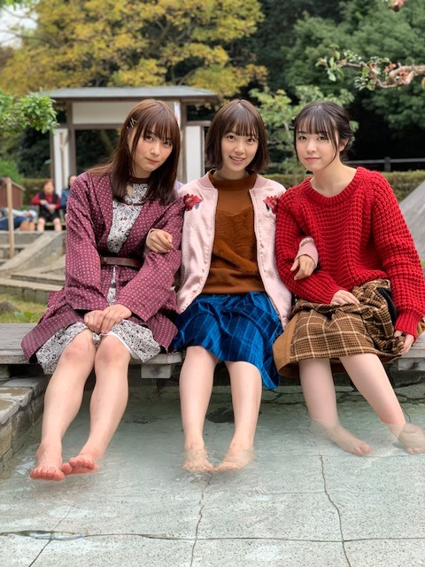
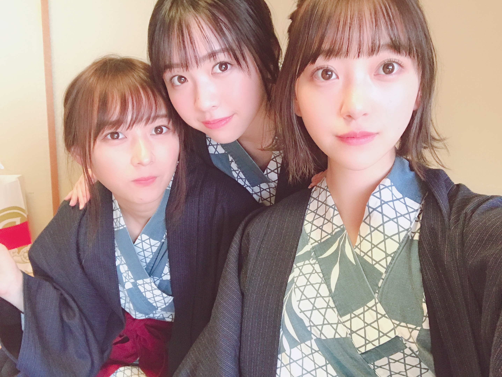
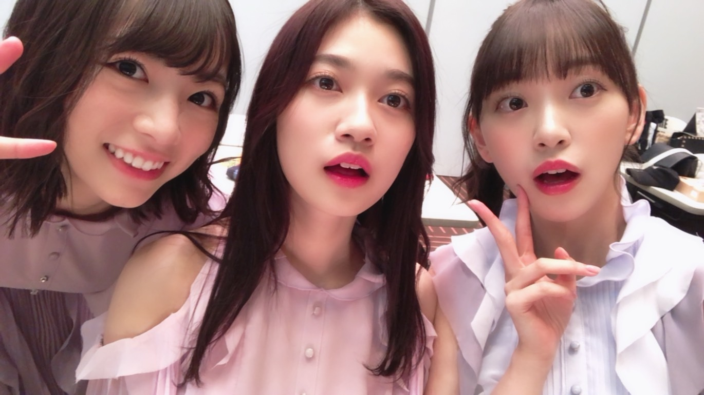
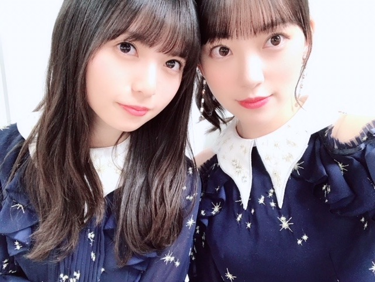
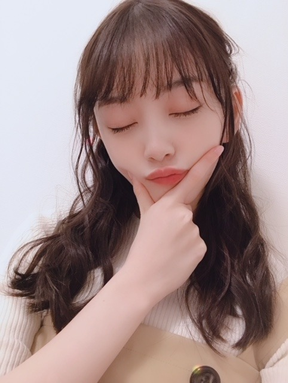

2018/1229Sat湯河原にもお猿さんがいたよ
今年はプリン会in北海道(プライベート)
が叶いましたが発売中の週刊プレイボーイさんにて
なんと、プリン会in湯河原 が実現しました！
わーい 温泉♪
大好きな温泉〜♪
まったりいつもの私たちのペースで、
撮影って言うことを忘れてしまうくらい楽しかったです☺︎
私が自惚れビーチをカラオケで歌いながらノリノリになるあまり地上に足が着いてない謎の写真もあります。笑
私が自惚れビーチをカラオケで歌いながらノリノリになるあまり地上に足が着いてない謎の写真もあります。笑
大切で大好きな2人と撮影できて幸せでした！


見てね☺︎
ar
「遊・悠・WesT」九州版2018冬号(表紙)
月刊TVガイド
EX大衆
週刊東京ウォーカー+
東海ウォーカー(表紙)
OVERTURE
with も発売中です！今日、12月29日23:30〜
「東野・加藤のこの歌が聴きたいベストテン」
明日、12月30日 日本レコード大賞生放送と
23時15分～「ジャパニーズ in プリズン～世界の獄中ニッポン人に会ってみた!～」
に出させていただきます
そして31日は紅白歌合戦と
CDTV年越しライブに出ます
年末ですね
駆け抜けます！突っ走ります！
師走です！


諸々、見てください^ ^

テレビ見ながら寝ちゃダメよ〜？
私がもう既におねむだけど...
笑
見つけてください☺︎
では！良いお年を。
2018/12/29 17:36


コメント(425)
自惚れビーチのサザエさんリピート可愛かったー
レコ大おめでとう！今年あったことで一番うれしい！未央奈のおかけです！
ホントにありがとう！これをいち早く伝えたかったんだ！
明日も頑張ってね！
今年中にプリン会で、湯河原に行けて良かったね
今年もあとわずか、突っ走ってね
未央奈と飛鳥先生のツーショット、いつでも可愛い
大賞二連覇おめでとう
自然と嬉し涙が出てきた
今年一番嬉しいよ
では、良いお年を～！
発表された瞬間嬉しすぎて涙が止まりませんでした！
明日の紅白も頑張ってください！！！
来年三連覇期待してます。
来年はプリン会の活動も楽しみですが、
映画の成功も祈っています。
未央奈ちゃんの嬉しい顔が映ったのが印象的です。
乃木坂に居る、未央奈ちゃんが最高です！
明日も楽しみです。ありがとう！
そして、レコ大大賞おめでとう。
テレビ見ながら泣いてしまいました笑
本当におめでとう！
プレイボーイ買いました！
プリン会で温泉行けて良かったね！
やっぱり三人揃うと未央奈も楽しそうで、見ててほっこりします。
明日も紅白、CDTVと大変そうだけど、頑張ってね！
いつも応援してます！
インフルエンサーとシンクロニシティよかったよ(o^^o)
明日の紅白も楽しみにしてるね(o^^o)
ゆっくり休んでね
斉藤貴巳
こんばんは。
初めてコメントします。
レコ大連覇、おめでとう！！
獄中TV見ています。
すごい番組ですね。
みおなしかできない番組ですね。
みんな泣いてたね！
2年連続なんて信じられないね！
だけどシンクロニシティは本当に良い曲！
俺的には100%信じてた！
やっぱCMソングだった事も良かったかも！
乃木坂46の曲は良い曲ばかりだけれど、
今年は三曲共に群を抜いていた！
本当におめでとう㊗️
明日は紅白だね！
楽しみ！
毎日毎日みおたんと一年過ごしてきた！
1年間ありがとうございました！
来年はもっと良い年にしたいね！
良いお年を！
それでは健康第一で！
信州のミッキイでした！
レコ大受賞おめでとう！
見てたよ！ うれしい～
2連覇って本当にすごい！
生演奏も迫力あったし
インフルでカメラに抜かれた
みおなの切ない表情よかったな～
あと黒髪ロング時代と重なって
感慨深く思ったり◎
また来年から背負うものが
大きくなったかもだけど
みおなのいる乃木坂なら
きっとさらに飛躍していける
これからも頑張ってね！
レコ大受賞本当におめでとう！
あとは紅白で
最高の締めくくりをね！
今日は卒論やってる場合じゃねぇ！明日からは卒論頑張れる！
ステキな涙でした、今年はどんなアーティストよりも忙しかっただろうね‥！紅白も頑張って！
堀ちゃん、超絶可愛かったよ〜
紅白、カウントダウンTV見るからねー
今日、堀ちゃんの卓上カレンダー届きました！
堀ちゃんの可愛さに、改めてニヤニヤしちゃいました！
堀ちゃん、大大大好きだよー
お疲れ様でした！
何時も頑張ってね～
皆ずっと大好き！
乃木坂46の名前が呼ばれた瞬間の感激は未だに忘れられない。
今年は色々あったが、乃木坂46と出会って、みおなのファンになって本当に良かったと思う。
明日の紅白は今年最後のイベントになるが、悔いのないように頑張ってください。
応援します。
発表の瞬間、飛鳥に抱きついて泣いてる未央奈の姿を見て涙が出てきたよ。
絶対にレコ大取るって信じていましたー！
シンクロニシティはほんとに素晴らしー曲だよね！
明日は紅白歌合戦だねー！
毎日大変だとは思うけれどCDTVと紅白頑張ってー！
テレビの前で未央奈を探して見ますよー
お疲れさまです！
レコ大二連覇おめでとう！！！
めちゃくちゃ感動したぁー！
早く受験終わらして、生でおめでとう言いたいなぁ。。。！
明日の紅白も楽しみにしてます！
良いお年をー！！！！
大賞受賞前のシンクロニシティは生演奏も相まって曲の壮大さに鳥肌が出て、受賞後のシンクロニシティはパフォーマンスに想いが詰まっててとても感動しました。美しい泣き顔が輝く笑顔に変わって自信を持った表情になっていく様子は、アイドル人生だったりこの一年だったりを表している気がして、色んな事が報われている瞬間だと思いました。一年の終わりに嬉しい知らせを聞けて本当に良かったです。
紅白でもCDTVでも咲き誇ってくださいね。応援してます。
二年連続のレコード大賞受賞、おめでとうございました！＼(^o^)／
二期さん代表で未央奈さんにコメントさせて頂きました♪
今年も残すとこ、紅白！
楽しみにしてます♪
一年間、笑顔と楽しい時間をありがとう♪
来年も更なる飛躍が出来ます様に！ 応援します♪
良いお年を♪(^_^)/
おはようっ！
年末のバタバタ感半端ねぇ！
忙しいだろうけど、体調管理して
年末年始を乗り切ってね
そして、レコード大賞二年連続受賞
おめでとう！
まいやんとなぁちゃんの涙のハグが
印象的でした...
なぁちゃんへの最後の卒業プレゼントに
なったのではないかと
何気ないメールで元気をもらえる
素晴らしい賞の受賞で感動を与えてくれる
本当に乃木坂って最高のグループだよ！
ありがとう
ありがとう
本当にありがとう
今年もあと、一日
最後の大舞台、紅白歌合戦
楽しみにしています
元気もらいました！
本当に嬉しいです！！
今年ももう終わってしまうね。あっ、レコ大おめでとう。連覇達成だね。
今年は、乃木坂にとっても変化の年だったね。１期生メンバーの相次ぐ卒業で、乃木坂も一区切りついたのかなと思ったりもしました。
来年は、２期生がもっと頑張らないといけないかも知れない年になります。みおながみんなを引っ張って行く存在になれるといいなあと思っていますよ。頑張ろうね。
では、紅白思い切り楽しんで来て下さい。
よいお年を。
レコード大賞おめでとう！
プリン会本当に大好きです♡
みんな可愛いのはもちろん、お互いが気を許しているというか、本当に素敵な関係だなって思います。755の動画も本当に可愛かった…⸜(*ˊᵕˋ*)⸝
いつかプリン会のユニット曲が出来たらいいなって思います！
昨日はレコード大賞からのバラエティーで未央奈Dayでした♪
紅白もテレビの前で応援しています！
よいお年を〜
レコ大2連覇おめでとうございます✨
とってもキラキラと輝いていたし、
キラキラした涙も美しかったです☆
テレ東番組はとてもシュールでしたね！
1日5食というのも新ためて驚きました♪笑
歌のベストテンも素晴らしかったですし、
プリン会のカラオケ動画も素敵でしたよ♡
みおちゃんから今年沢山の幸せ貰えました♡
今日は、紅白～CDTVライブ楽しみです！！
よいお年を～☺
昨日はレコ大二連覇おめでとう！
メンバーみんなで涙を流して喜んでいる姿に
感動して大号泣してしまいました
これはメンバー全員とスタッフさんと
ファンのみんなで勝ち取った賞だと
自負しています
ありがとう、未央奈ちゃん
大好きだよ、乃木坂が！
紅白歌合戦も楽しみにしてるからね♪
プリン会好きだから嬉しい!
3人とも、ほんとにかわいい(*´`)
紅白もCDTVも見るよ〜!
いよいよ2018年ラストの日だね!
テレビの前から応援してるよ!
明日からもfight!!
前回はブログ「ミディアム年末」に「乃木中」と「おしゃれイズム」とブログの感想を書きました！
時間→「No.365 2018年12月29日 15:34」
ブログ更新ありがとうございます！
プリン会in湯河原が実現して良かったですね！「週プレ」や755の動画を見て、凄く楽しんでいるのが伝わってきました！
プリン会、ワタボコリ、あしゅみおなの写真に今回も癒されました！感謝感謝です！
「レコ大」観ました！昨年に引き続き2年連続大賞受賞おめでとうございます！なぁちゃんも仰っていましたが、僕も今年1番嬉しいです！いやぁ、凄いなぁ・・・2連覇かぁ・・・(驚)
今年もテレビで観ない日は無いほど活躍された乃木坂の皆さん、今回の涙はきっと嬉しさだけではなく、色んな感情が込み上げての涙だったのかなと思いました！僕も貰っちゃった(涙)
昨年大賞受賞の「インフルエンサー」は勿論、今年大賞受賞の「シンクロニシティ」も演奏が生バンドなので凄くかっこよかったし、改めて生バンドの迫力、凄さを感じました！
レコ大2連覇からの紅白って最高の流れやん！
紅白も頑張れ～！テレビの前で見守ってます！
「ジャパニーズinプリズン」観ました！
刑務所のルールって世界共通だと思っていたのですが、全然違って終始驚きっぱなしでした！あと、未央奈ちゃんの1日5食も！そんなに(笑)
改めて日本に生まれて良かったなと強く思う、そんな番組でした！悪い事はしないぞ～！(笑)
ここまで読んで頂きありがとうございました！
毎日お仕事お疲れ様です！体調にはくれぐれも気を付けて頑張ってくださいね！
ではでは！
連続での受賞は、一過性の流行りとかでは無く、皆さんが地に足を付けて努力してきた証。
すごく感動したし、乃木坂ファンである事を誇りに思います。
今年は全ツの全会場に行く事が出来たし、握手会にも度々お邪魔しました。全部の未央奈ちゃんがとびきり可愛く、輝いてました
来年は未央奈ちゃんのお芝居も沢山観られるし、益々飛躍して行く姿を見られそうで、本当に楽しみ。
どうか無理だけはせず体調管理に気をつけて、これからも輝き続けて下さい。
大好きです
それでは良いお年を❣️
メンバーも言われていた、スタッフさんや関係各所の皆さんのおかげと、周りの方々に感謝を忘れない気持ちをずっと持ち続けているみなさんの姿が本当に素敵です(o^^o)
それでもやっぱり、国民の前でパフォーマンスを披露し続けたメンバーのみんなの力が間違いなく1番大きいと言わせてください！ファンとして！
堀ちゃんが、乃木坂46のメンバー全員が最高です！！！
発表されてからみんなが喜んでいる姿や表情がとても印象的で、一ファンとして凄く嬉しい気持ちになりました( ´ ▽ ` )
好きな人達が喜んでいる姿やこれまでの頑張りが実を結んだシーンというのは自分のことのように、というより自分のこと以上に嬉しくなりますね(o^^o)♩
発表後、涙ぐみながらも表情は笑顔でパフォーマンスする堀ちゃんが本当に美しかったです…！胸にグッときました…！！
シンクロニシティ、MVの飛鳥ちゃん生駒さんと三人で踊る堀ちゃんが凄く好きで、何度見たことか( ´ ▽ ` )
普段から年末まで感動を本当にありがとうございます！(o^^o)
今日はいよいよ大晦日で紅白戦ですね〜、今年もあと少し( ´ ▽ ` )
堀ちゃんが笑顔で年末を過ごし、年始を迎えられることを願っています(o^^o)
ではでは、年明け前にもう一回コメントしたいと思っていますが念のため…
堀ちゃん！今年は本当にありがとうございました！！
来年もよろしくお願いします！(o^^o)
今年の思い出こそみおなに出会えたことです！
これからも頑張ってください！
整いました！
昨日はレコ大受賞おめでとう！
感動したよ
今はコタツにくるまり
ミカンとおつまみを用意して
お酒をチビチビやりながら
紅白が始まるのを今か今かと待ってるよ〜
今年はどんな衣装何だろう？
メイクは？髪型は？前髪はどうするのかな？
キラキラ素敵なパフォーマンス
待ってるよ〜♪
ブログありがとう❗️
レコード大賞おめでとう❗️✨✨
見てて震えたし、
ホントに嬉しかった❗️
みんな泣いていたけど
ホントにうれしいんだなとわかったし
乃木坂46に出逢えてよかった❗️
乃木坂46を好きでよかった❗️❗️
ありがとう✨✨
ゆうたんより
堀ちゃんがいたから、一年間頑張れました！
堀ちゃんを応援してよかった！
来年も堀ちゃんを、全力で応援し続けるます！
堀ちゃん、大好きだよー
プリン会in湯河原が実現したんだねー(*´꒳`*)
大切で大好きなお2人と撮影楽しめて良きでしたね（╹◡╹）♡
レコード大賞おめでとうございます！！
2年連続すごいね(´⊙ω⊙`)
これからも応援しております
年末ですねー٩(๑❛ᴗ❛๑)۶
紅白楽しみにしてます
今年1年もお疲れ様でした･:*+.\(( °ω° ))/.:+
来年もよろしくお願いします(● ˃̶͈̀ロ˂̶͈́)੭ꠥ⁾⁾
良いお年を〜
今年も残りわずかになりました
甘えん坊将軍は悔いなく乃木坂を応援出来ました
だって、みんな毎年、毎年新たな
魅力が増していて、応援していて楽しいんだ
今年も１年ありがとうございました
来年もよろしくお願いします
紅白歌合戦、もうすぐ始まるね
今年はどんな衣装なのかな？
ドキドキワクワク楽しみにしています
今日で乃木坂ファン卒業です
僕はなぁちゃん一筋だけど、今思えば
箱推しだったのかなぁって思います
それだけ乃木坂に魅了されたし、
乃木坂46というグループが大好きでした
紅白歌合戦、なぁちゃんの
最後の勇姿を見届けたいと思います
未央奈ちゃんも頑張ってね
いっぱい元気もらった！
レコ大うれしかった！みんなびっくりしてたけど、その中でみおながちゃんとカメラさんにぺこってしてて、そういうプロ意識とか気を配れるところがみおなのいいところ！尊敬する！
来年ももちろんみおなのこと応援するよ！
来年もだいすき
バスラ当たりますように
紅白パフォーマンス、めっちゃ素敵だったよ
ななせを笑顔で送れてよかったね
バナナマンさんにも見てもらえたし最高でした
サブちゃんのまつりも応援してたね
楽しかった
コメントする